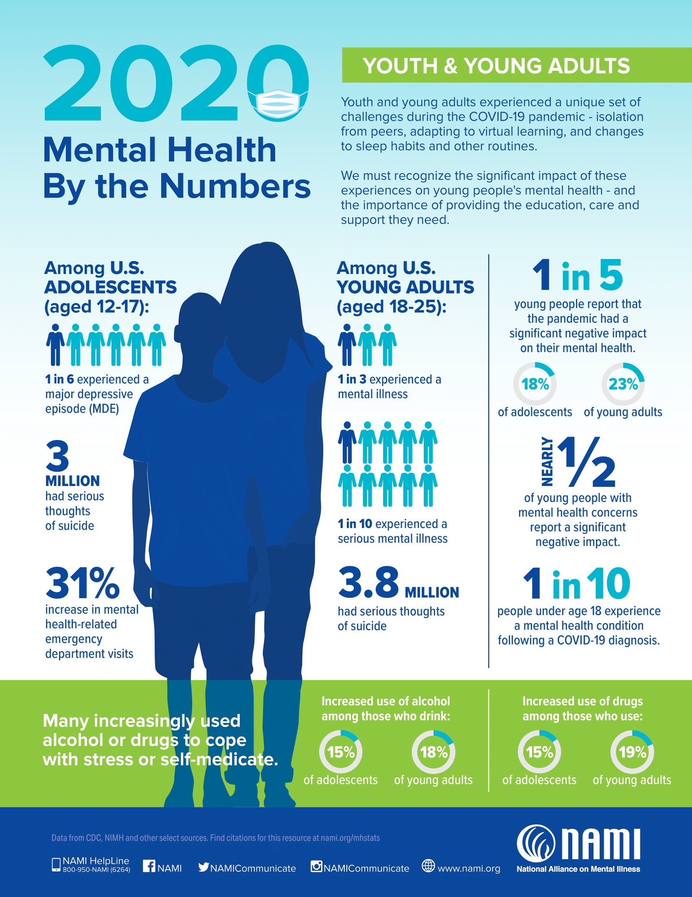

.
COVID-19
.
The COVID-19 pandemic has undoubtedly had negative impacts on our youth. On this page you can find statistics, information, and resources to help with your journey.
COVID-19's Impacts (Excerpt from MHA)
As COVID-19 spread throughout the United States, it not only resulted in greater morbidity and mortality in
terms of physical health but also had disastrous effects on the mental health of the nation. As opposed to
previous disasters in the United States that affected certain specific regions or populations where aid and trauma
response could be concentrated, the COVID-19 pandemic has affected the entire population of the country.
While the risk of contracting the disease itself is a population-wide traumatizing event, our physical and social
environments have changed as well, leading to greater rates of isolation and loneliness, financial hardship,
housing and food insecurity, and interpersonal violence. Further, the COVID-19 pandemic has highlighted and
exacerbated existing inequities and injustices faced primarily by black, indigenous, and people of color (BIPOC)
in the United States. Any of these factors by themselves can negatively affect the mental health of individuals,
but in combination they have created a nationwide mental health crisis.
Statistics
- The number of people looking for help with anxiety and depression has skyrocketed. From January
to September 2020, 315,220 people took the anxiety screen, a 93 percent increase over the 2019 total
number of anxiety screens. 534,784 people took the depression screen, a 62 percent increase over the
2019 total number of depression screens.
- The number of people screening with moderate to severe symptoms of depression and anxiety has
continued to increase throughout 2020 and remains higher than rates prior to COVID-19. In
September 2020, the rate of moderate to severe anxiety peaked, with over 8 in 10 people who took an
anxiety screen scoring with moderate to severe symptoms. Over 8 in 10 people who took a depression
screen have scored with symptoms of moderate to severe depression consistently since the beginning of
the pandemic in March 2020.
- More people are reporting frequent thoughts of suicide and self-harm than have ever been
recorded in the MHA Screening program since its launch in 2014. Since the COVID-19 pandemic
began to spread rapidly in March 2020, over 178,000 people have reported frequent suicidal ideation. 37 percent
of people reported having thoughts of suicide more than half or nearly every day in September
2020.
- Young people are struggling most with their mental health. The proportion of youth ages 11-17
who accessed screening was 9 percent higher than the average in 2019. Not only are the number of
youth searching for help with their mental health increasing, but throughout the COVID-19 pandemic
youth ages 11-17 have been more likely than any other age group to score for moderate to severe
symptoms of anxiety and depression.
- Rates of suicidal ideation are highest among youth, especially LGBTQ+ youth. In September 2020,
over half of 11-17-year-olds reported having thoughts of suicide or self-harm more than half or nearly
every day of the previous two weeks. From January to September 2020, 77,470 youth reported
experiencing frequent suicidal ideation, including 27,980 LGBTQ+ youth.
Mental Health By The Numbers (NAMI Infographic)
Effects on High School Students (Excerpt from the CDC)
- More than one in three high school students (37.1%) experienced poor mental health during the COVID-19 pandemic.
- 44.2% of students experienced persistent feelings of sadness or hopelessness.
- Almost 20% seriously considered suicide, and 9.0% attempted suicide during the 12 months before the survey.
COVID-19 Resources
Young people are anxious about the COVID-19 outbreak. It is important for you to get information from reliable resources for the most up-to-date information about Covid-19. Here is the list of trusted websites:
- Centers for Disease Control and Prevention (CDC)
- World Health Organization (WHO)
- American Academy of Pediatrics (AAP)
- How teenagers can protect their mental health during COVID-19 (UNICEF)
- Coping with grief and loss during COVID-19 (The Clay Center for Young Healthy Minds)
In a Crisis?
National Suicide Prevention Lifeline:
Call or Text 988
OR call 1-800-273-TALK (8255)
Crisis Text Line:
Text "HOME" to 741-741 to connect with a Crisis Counselor
Acknowledgements
We would like to express our sincere thanks and gratitude to the Ardrey Kell High School social worker Jon Rochester and counselor Chasity Brooks for providing support and guidance in completing this website.
We would also like to extend our thanks to Dr. Angela Garbin for her suggestions and direction.
Contact
Please email us for feedback or questions:
contact.youthhealthymind@gmail.com